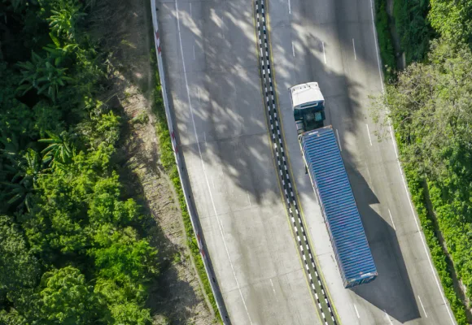
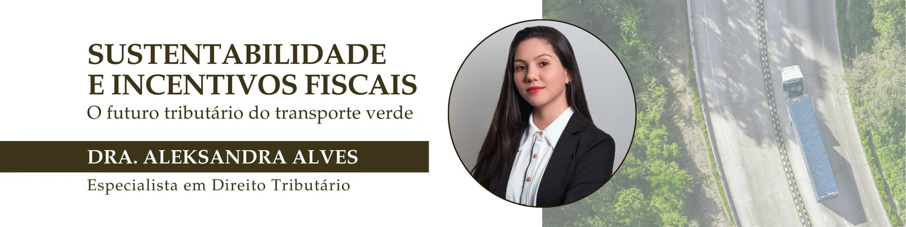

Sustentabilidade e Incentivos Fiscais: o Futuro Tributário do Transporte Verde
O setor de transporte de cargas é um dos pilares da economia nacional, essencial para a circulação de bens e para o desenvolvimento regional. Ao mesmo tempo, é um dos segmentos mais pressionados a reduzir suas emissões de gases de efeito estufa e adotar práticas ambientalmente responsáveis. Essa transformação, impulsionada por metas globais de descarbonização e pela busca por eficiência energética, começa a encontrar respaldo também no campo tributário.
A pauta da sustentabilidade fiscal ganha força no Brasil
Diversas medidas legislativas e econômicas vêm sendo implementadas com o objetivo de estimular investimentos em tecnologias verdes e reconhecer economicamente a redução de emissões de carbono. Nesse contexto, as transportadoras que adotam frotas menos poluentes, utilizam biocombustíveis ou participam de programas de neutralização de carbono passam a ter acesso a benefícios tributários, tanto em âmbito federal quanto estadual.

Um dos mecanismos mais promissores é o crédito de carbono, instrumento que quantifica a redução de emissões de gases de efeito estufa e pode ser comercializado ou utilizado como compensação ambiental. Com a publicação da Lei no 15.042/2024, que instituiu o Sistema Brasileiro de Comércio de Emissões de Gases de Efeito Estufa (SBCE), o país passou a ter uma base legal estruturada para o mercado regulado de carbono.
A referida lei prevê deduções fiscais importantes: os investimentos feitos para a geração e certificação dos Créditos de Redução de Emissões de Gases de Efeito Estufa (CRVEs), como custos com auditoria, monitoramento e registro, poderão ser descontados do IRPJ e da CSLL. Isso cria uma oportunidade para empresas que desejam estruturar projetos sólidos de descarbonização, além de compensar suas emissões, esses projetos oferecem vantagens tributárias significativas.
No âmbito estadual, Minas Gerais também apresenta iniciativas promissoras. O Projeto de Lei no 3.966/2022, em tramitação na Assembleia Legislativa, busca criar mecanismos de incentivo à descarbonização do transporte e à transição energética, incluindo benefícios fiscais voltados a frotas movidas por combustíveis limpos, biometano e eletricidade. A proposta dialoga diretamente com os objetivos da Política Estadual de Mudanças Climáticas (Lei no 21.972/2016) e da Política Estadual de Mobilidade Urbana Sustentável, reforçando o papel de Minas na vanguarda da sustentabilidade logística.
Esses incentivos são fundamentais para viabilizar a renovação tecnológica da frota, a implantação de infraestrutura de recarga e o uso de biocombustíveis de baixa emissão. A tributação verde atua, portanto, como um instrumento de compensação econômica e estímulo à inovação, essencial para que o transporte mineiro e nacional possa competir em um mercado cada vez mais exigente quanto à responsabilidade ambiental.
Com a Reforma Tributária (EC 132/2023), abre-se ainda a possibilidade de que os novos tributos, o IBS (Imposto sobre Bens e Serviços) e a CBS (Contribuição sobre Bens e Serviços), incorporem, em sua regulamentação, mecanismos de incentivo à sustentabilidade, substituindo os atuais benefícios de ICMS e PIS/COFINS por políticas de caráter ambiental e de estímulo à inovação.
Para o setor de transporte de cargas, essa nova realidade tributária representa uma oportunidade estratégica. Além de contribuir para o meio ambiente e fortalecer a imagem institucional das empresas, investir em práticas sustentáveis poderá reduzir a carga tributária, aumentar a competitividade e abrir portas para certificações ambientais exigidas por grandes embarcadores e cadeias logísticas globais.
O futuro do transporte é, inevitavelmente, verde e também tributário. A sustentabilidade deixou de ser apenas uma pauta ambiental e passou a ser um instrumento de gestão fiscal inteligente, capaz de alinhar economia, competitividade e responsabilidade ambiental.

Paulo Teodoro – Advogados Associados